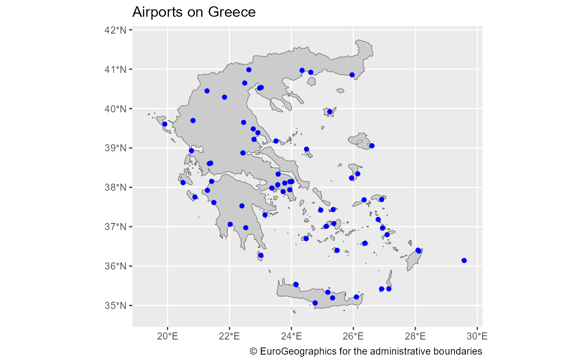

R/gisco_get_airports.R
gisco_get_airports.RdLoads a sf object from GISCO API or your local library.
gisco_get_airports(
year = "2013",
country = NULL,
cache_dir = NULL,
update_cache = FALSE,
verbose = FALSE
)
gisco_get_ports(
year = "2013",
country = NULL,
cache_dir = NULL,
update_cache = FALSE,
verbose = FALSE
)Year of reference. Only year available right now is "2013".
Optional. A character vector of country codes. It could be
either a vector of country names, a vector of ISO3 country codes or a
vector of Eurostat country codes. Mixed types (as c("Turkey","US","FRA"))
would not work. See also countrycode::countrycode().
A path to a cache directory. See About caching.
A logical whether to update cache. Default is FALSE.
When set to TRUE it would force a fresh download of the source
.geojson file.
Logical, displays information. Useful for debugging,
default is FALSE.
A POINT object on EPSG:4326.
gisco_get_airports() refer to Europe. All shapefiles provided in
EPSG:4326.
gisco_get_ports() adds a new field CNTR_ISO2 to the original data
identifying the country of the port. Worldwide information available.
The port codes are aligned with
UN/LOCODE standard.
You can set your cache_dir with gisco_set_cache_dir().
Sometimes cached files may be corrupt. On that case, try re-downloading
the data setting update_cache = TRUE.
If you experience any problem on download, try to download the
corresponding .geojson file by any other method and save it on your
cache_dir. Use the option verbose = TRUE for debugging the API query.
For a complete list of files available check gisco_db.
Other infrastructure:
gisco_get_healthcare()
# \donttest{
library(sf)
#> Linking to GEOS 3.11.2, GDAL 3.7.2, PROJ 9.3.0; sf_use_s2() is TRUE
Greece <- gisco_get_countries(country = "EL", resolution = "1")
AirP_GC <- gisco_get_airports(country = "EL")
AirP_GC <- st_transform(AirP_GC, st_crs(Greece))
library(ggplot2)
ggplot(Greece) +
geom_sf(fill = "grey80") +
geom_sf(data = AirP_GC, color = "blue") +
labs(
title = "Airports on Greece",
shape = NULL,
color = NULL,
caption = gisco_attributions()
)

##############################
# Plot ports #
##############################
ports <- gisco_get_ports()
coast <- giscoR::gisco_coastallines
# To Equal Earth projection :)
library(sf)
coast <- st_transform(coast, 8857)
ports <- st_transform(ports, st_crs(coast))
ggplot(coast) +
geom_sf(fill = "#F6E1B9", color = "#0978AB") +
geom_sf(data = ports, fill = "red", shape = 21) +
theme_void() +
theme(
panel.background = element_rect(fill = "#C6ECFF"),
panel.grid = element_blank(),
plot.title = element_text(face = "bold", hjust = 0.5),
plot.subtitle = element_text(face = "italic", hjust = 0.5)
) +
labs(
title = "Ports Worldwide", subtitle = "Year 2013",
caption = "(c) European Union, 1995 - today"
)
# }